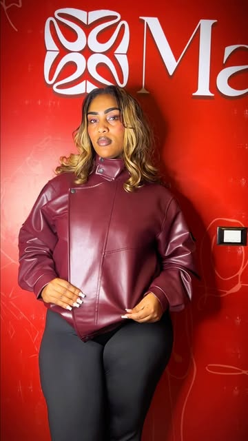
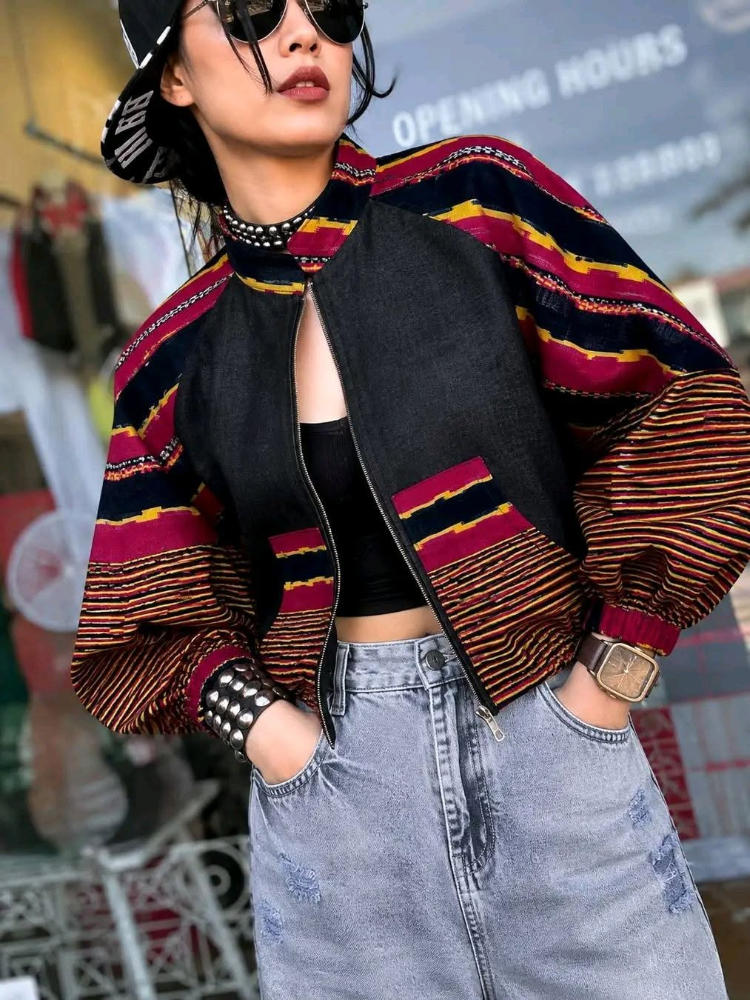
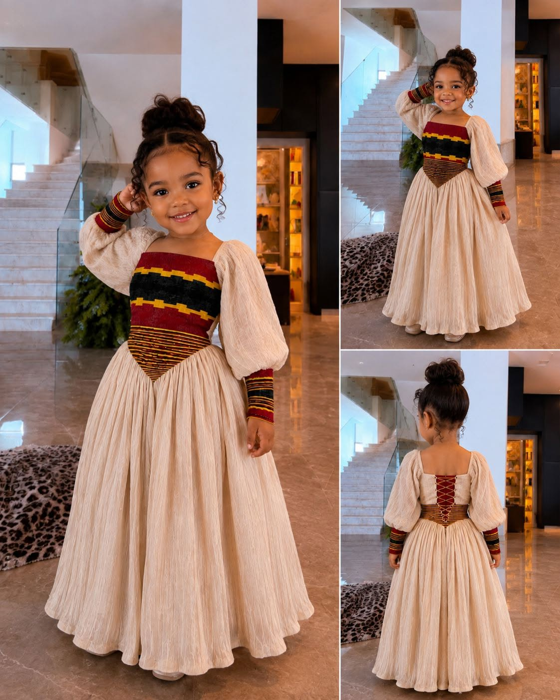

Line one
Cultural wear
The colours and woven bands of Ethiopian cultural dress, Sidama among them, worked into dresses, jackets and sets.
Every piece is made to order, so colour, trim and fit can be adjusted to you.
The colours and woven bands of Ethiopian cultural dress, Sidama among them, worked into dresses, jackets and sets.

Simple, sharply cut contemporary pieces for work, events and the stage.

Everyday pieces carrying the Mayza mark, plus apparel made to your own design for teams, companies and events.

Cultural dresses scaled down for little ones, and matching outfits a whole family can wear together.
Choose a piece you like. We adjust the colour and fit on the order sheet.